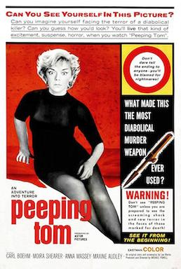

Michael Powell
1960
86 minutes
TITLE: Peeping Tom TEXT PLACEHOLDER 138
This is a nasty little early slasher film by the same guy who did The Red Shoes and Black Narcissus. Not surprisingly, it ruined his reputation as a director, though it ended up being a genre classic. It's pretty lurid and scary for a film of the time, and a bit unusual since there really isn't much mystery to it. You find out right away who the killer is and just follow him around as he does his thing, filming the women he murders on camera until he gets caught. It seems slightly quaint by today's standards, but was probably quite shocking at the time.
You decide to watch this film late at night after coming home from the bar at bartime with a little bit of a beer buzz. Halfway through the film you hear a loud single beep. At first you assume this is street noise, which you generally filter out. But another minute later you hear another beep which is clearly coming from inside the apartment. Your first thought is that it is the bread machine, the most recent beeping culprit, but a quick trip to the kitchen assures you this is not the case. Another minute later, before you can even restart the film, you hear another beep and conclude that it is most likely the battery in the smoke detector by the door.
You go over to the door of your apartment and take down the smoke detector. It is slightly over your head, so you must stand on your tiptoes to do this. You pull out the battery casing, which contains two relatively fresh AA batteries. While you are examining this, you hear another beep. Clearly it isn't this smoke detector. Just to make sure, you press the button and are greeted with a single beep followed by a short pause and three more beeps, all at a slightly lower tone and volume. While you are performing this test, you hear another remote beep. You try to remember if there is another smoke detector somewhere in the apartment.
You seem to remember the landlord or one of his minions bringing over an additional smoke detector/carbon monoxide detector for you at some point shortly before the last time the fire marshall was over to inspect the building. You can't remember if you did anything special with this. Maybe you put the second redundant detector in the kitchen. You drag a chair into the kitchen and hear another beep. The beep echoes through the apartment, and even your birder ears can't quite detect the direction. You clamber onto the chair and then mount the countertop to feel around on top of the high cabinets to see if you tossed it up there. It feels unsafe. You frown at the amount of sticky grease smoke that has coagulated on this high surface, but now isn't the time to worry about that. The detector isn't up here, and another mocking beep greets you as you carefully dismount back onto the kitchen chair.
You stand still in the doorway of the kitchen for a full minute with your eyes closed. Sometimes it helps to have your eyes closed, another essential birding lesson. The next beep seems to be coming from the bedroom. To your horror, you look up the wall and see the culprit--there is a mounted smoke detector for the building high on the wall, a good six feet or so over your head. You stare up at it as it beeps again, well out of reach.
You think for a moment and drag the chair from the kitchen into the bedroom. You know you won't be able to reach it, but at least this will tell you by how much. You push the nightstand out of the way and mount the chair. The smoke detector is still a good few feet away from your hand, even if you stand on your tiptoes.
You stand staring at the problem. It beeps at you a couple of times while you ponder. It's 3:27 in the morning on a weekend. You're not going to be able to sleep with this beeping over your head every minute. It's so high up you're not even sure you can reach it on the ladder you have in your closet, which you hate to climb onto even during the day. Usually out of an abundance of caution you will call someone to let them know if you are doing ladder work so they can check on you and make sure you don't fall. Your uncle was badly injured in a similar manner by falling from a height while working alone and later succumbed to his injuries after a helicopter ride and a few miserable months in intensive care. You don't want to be the second one in your family to perish in such a manner. Nevertheless, something must be done.
You fetch the ladder from your closet and at least put on some pajama bottoms and a ripped t-shirt just in case. You unlock the front door as well in case you have to call for help. You set up the ladder by the wall and carefully mount the ladder. Even on the penultimate rung your fingers can only barely brush the bottom of the smoke detector, which has continued its intermittent beeps during the process. If you were foolish enough to climb to the top rung and balance on top of the ladder you might be able to get it, but this isn't happening.
Out of options, you go and fetch your broom. You move the ladder out of the way and try to reach the smoke detector from the floor with the broom. Even this is out of reach. Desperate times call for desperate measures. You climb a few rungs onto the ladder and swing wildly at the smoke detector, finally making contact. The smoke detector falls from its mount on the wall and then dangles from the wires. The fucking thing is plugged into the wall. You wonder if it's plugged into the electricity or if it is plugged into the alarm system for the building. You hate the fact that you're going to have to explain this to the landlord. You briefly mount the ladder again without the broom as the smoke detector beeps defiantly. You can barely reach it, but it's still attached to the wall by the wires.
You dismount again and then fetch the broom, swinging at the smoke detector pinata until you make solid contact and detach it from the wires, sending it crashing into the wall and shattering the cheap plastic. You retrieve the still-beeping husk from the floor and pull out the dying nine volt battery, silencing it for good. Problem solved for now. You take some time to put the chair and the ladder back, clean up the broken plastic pieces, and finish the movie. You hope your antics and the beeping haven't woken up your neighbors, and you decide not to bother the landlord about this until you absolutely have to. At least the one by the door still works.
Time to choose something different: